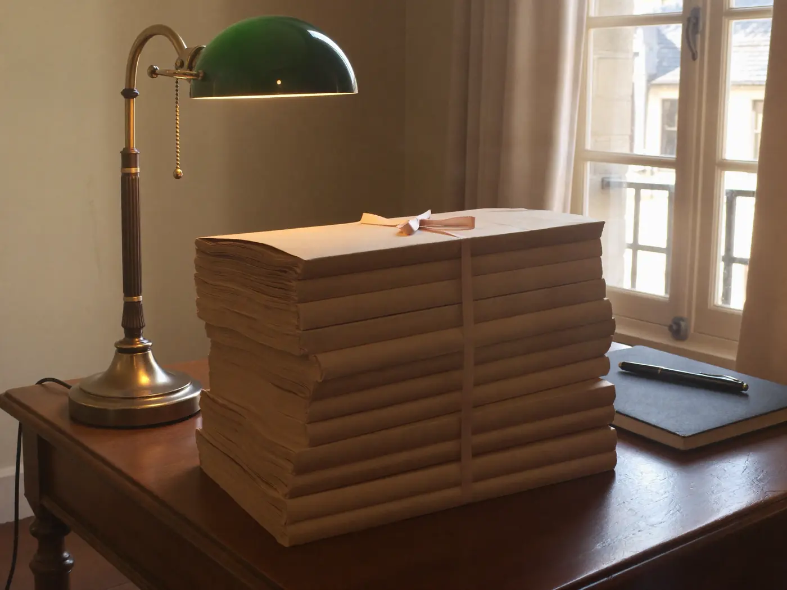
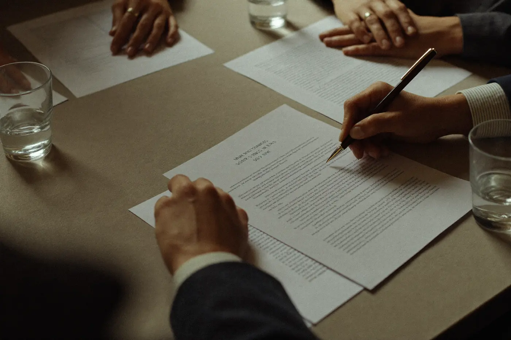

Contracts read before they are signed. Disputes resolved before they are fought. A firm of two principals who answer their own correspondence — no juniors billed under another name, no advice that needs a second lawyer to translate it.
The agreement you are about to sign, read by someone acting only for you — and redrafted in words both sides can hold to.
Most disputes end at a well-written letter. We price the letter first, the courtroom last, and tell you honestly which one your matter needs.
The lease is usually the largest contract a small business ever signs. It deserves more than a skim on settlement morning.
A business that outlives its founder does so on paper written years earlier. We write that paper while it is still easy.
Legal advice fails in two familiar ways: it arrives late, and it arrives translated through three layers of a firm you never meet. Both are structural. A large practice must keep juniors busy and partners scarce; the person who knows your file is rarely the person who signs the advice.1
We are structured against both failures. Two principals, one office, no leverage model. When you telephone, the person who answers has read your file, because there is no one else to have read it. Fixed fees where the scope is knowable2; an honest hourly account where it is not.
This is not a plea for smallness as a virtue. Some matters need a bigger machine — a float, a class action, forty jurisdictions. When yours does, we will say so in the first meeting and hand you to the right firm with a briefing note.3 What remains — the contracts, leases, disputes and successions that owner-run businesses actually live on — is precisely the work a small firm does best.
1. Advice is signed by the principal who wrote it. 2. A written scope and price before work begins; the price moves only if the scope does, in writing. 3. Referrals are unpaid — we take no commission for sending you elsewhere.

Client matters are confidential. They are listed here as they appear in our ledger — which is to say, not really listed at all.
The bars do not lift. A firm that shows you its clients’ names would show someone yours.

Admitted 1998. Fifteen years in a national firm’s commercial division before concluding that the best part of the job was the client, not the leverage. Writes the demand letters that end matters.
Admitted 2004. Acted on either side of several hundred commercial leases and the successions of family companies old enough to have outlived their founders twice. Reads the schedule everyone else skips.